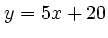
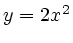

plt can plot more than one data set on the same set of axes. There are several ways to overlay plots.
Figure 7.1 demonstrates the use of the -p option to specify multiple plots in a single invocation of plt, using a data file that includes a column of ordinates for each plot. The figure can be produced using any of these commands:
plt example5.data 0 3 0 2 1 -F"p s+ s* m"
-x "x axis" -y "y axis" -t "plot of y=x; y=2x and y=3x"
plt example5.data 0 1 2 3 -F"p 0,3s+ 0,2s* 1m"
-x "x axis" -y "y axis" -t "plot of y=x; y=2x and y=3x"
plt example5.data % -F"p 0,3s+ 0,2s* 1m"
-x "x axis" -y "y axis" -t "plot of y=x; y=2x and y=3x"
There are several ways of specifying the data columns to be ``taken'' by the
-p plotstyles. In the first command, the data columns are listed (after
the name of the data file) in the order they are taken (the first 's'
takes column 0 as  and column 3 as
and column 3 as  , the second 's' takes column 0
as
, the second 's' takes column 0
as  and column 2 as
and column 2 as  , and the 'm' takes column 1 as
, and the 'm' takes column 1 as  and
implicitly takes column 0 as
and
implicitly takes column 0 as  ). In the second command, all of the
data columns are listed in order after the name of the data file, and each
plotstyle name is prefixed with a comma-separated list of the data columns it
takes. The third command illustrates how ``%'' can be used as shorthand
for ``all of the data columns, in order''; it is equivalent to the second
command.
). In the second command, all of the
data columns are listed in order after the name of the data file, and each
plotstyle name is prefixed with a comma-separated list of the data columns it
takes. The third command illustrates how ``%'' can be used as shorthand
for ``all of the data columns, in order''; it is equivalent to the second
command.
If the data sets to be overlaid come from different files, it will be easiest to invoke plt once with each data file, and to use a different method to create the overlay. The -fa and -o options allow you to do this. Plot the data from the first file in the usual way, but use -fa to record the axis limits into a format file. Then plot the data from the second file using this format file and the -o option, which suppresses all output except your new data plot. Study figure 7.2, which overlays the plot of  over that of .
In this example, the axis specifications for the plot of are written into the format file example7.axes:
plt example7.data 0 1 -f example7.formatwhere example7.format contains:
t Plot of y = 5x+20 and y = 2x L (P*.8) - - LB 2 x x axis y y axis xa -6 6 1 - 1 0 ya -5 55 5 - 5 0 fa example7.axes
[In example7.format, the second line (L (P*.8) - - LB 2) appends a small superscript 2 to the plot title. (P*.8) reduces the point size to 80% of the default, and ``- - LB"'' aligns the left bottom point of the 2 at the RC point of the previous string (the title). See chapter 11 for a discussion of how text styles, including point size, can be modified; and see chapter 8 for details on the -L option and on creating superscripts and subscripts in plot titles and other text.]
The information written by the command above into example7.axes is recalled in the command below (using the -f option), and the new plot is then overlaid using the -o option.
plt example7.data 0 2 -f example7.axes -o
Although a single data file, example7.data, contains data for both plots in this example, the data might just as easily have been collected from different files. Note that if you know ahead of time what axis limits you will use, you don't need -fa; just use -xa, -ya, -X, or -Y with the appropriate axis limits when making the second plot.